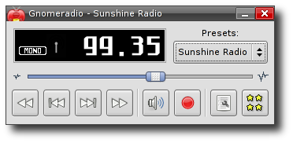
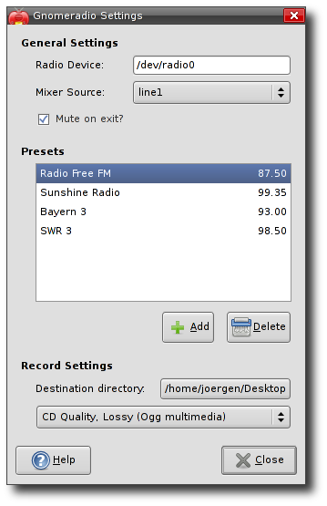
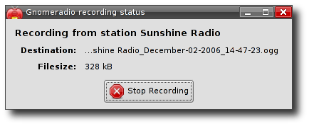
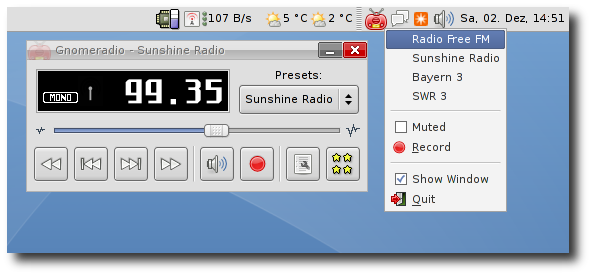

Gnomeradio is a FM-radio tuner for the GNOME desktop (version 1 and 2). It should work with every FM tuner card that is supported by video4linux. Remote controls are supported via (optional) LIRC-support. Gnomeradio can also record radio using GStreamer.
This screenshot shows the main window of gnomeradio.
The preferences dialog.
The recording status window.
Gnomradio tray icon with it's context menu.
The manual is available via the GNOME Help Browser or by pressing F1 in the app. Following is a table with available keyboard shortcuts.
| Open the help | F1 |
| Start recording | r |
| Mute/unmute the volume | m |
| Terminate Gnomeradio | q |
| Scan forward | f |
| Scan backwards | b |
| Select next preset | n |
| Select previous preset | p |
| Increase volume | + |
| Decrease volume | - |
Yes! My time is limited and gnomeradio receives much to less love :-(
If you are interessted in contributing, there is always something to do.
The easiest thing to start with is usually translating or updating the documentation.
If you are more into coding, you can have a look at bugzilla at the open bugs or
come up with something own. I happily accept all patches that have a minimum
level of quality and don't conflict overly with the current design.
Tarballs are available from the gnomeradio launchpad site Gnomeradio has also been packaged already for most distributions.
Gnomeradio 1.8 requires GNOME (>=2.14), GTK (>=2.8) and GStreamer (>=0.10). For remote control support, you need a working LIRC setup.
Furthermore you can try out the cutting edge development version. The module is gnomeradio in GNOME git.
Copyright © 2000-2010, Joergen Scheibengruber and The GNOME Project.
GNOME and the foot logo are trademarks of the GNOME Foundation.